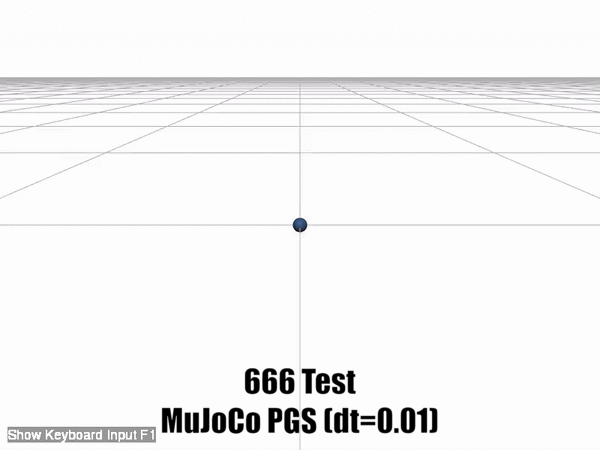
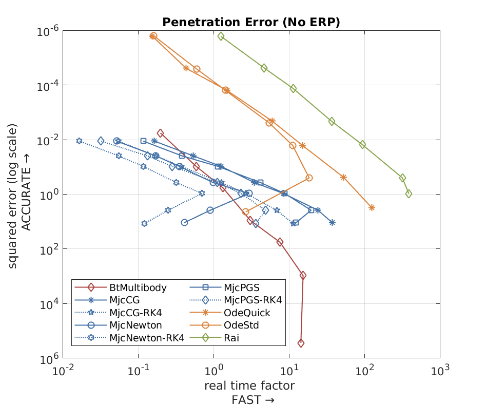

666 test

Test scenario
Tested solver list
- Rai
- Bisection solver (Rai solver)
- Bullet
- Sequence impulse
- NNCG
- MLCP Dantzig
- MLCP PGS
- MLCP Lemke
- ODE
- MuJoCo
Dart[1]
Commentary
-
[1] Dart simulation fails in this test. The solver stopped with an error message and finally terminates with segmentation fault error.
Results

